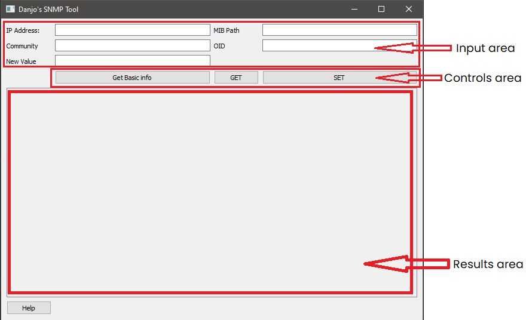

Welcome to the SNMPTool help!
If you need help with any of the commands, or have problems, you've come to the right place!
The command line tool
Overview of the commands:
- /help
- /basicinfo
- /get
- /set
The Command "/help"
If you type "/help" you will be redirected to this page to get help with any problem and/or question you might have
The Command "/basicinfo"
If you use the Command "/basicinfo", the following basic information about the IP you will enter are going to be printed
Printed information:
- sysName: The name of the scanned Computer
- sysContact: The contact person for the scanned Computer
- sysLocation: Location in which the scanned Computer is located
- sysDescr: The description of the scanned Computer
- sysUptime: Prints the uptime of the scanned Computer in the format: hh:mm:ss
- sysServices: Prints the number of available services in the scanned Computer
Warning!
This function only works if the scanned system supports the "SNMPv2-MIB", because the information is gathered from this MIB!
The Command "/get"
This command is used to get the value from a MIB
Required information
- IP address: The IP address of the computer you want to scan (Warning: make sure to enter a valid IP, it won't be checked!)
- Community name: The name of the community from which you want to gather data
- MIB path: The path to your MIB (Warning: The path must be in the following format even on windows: C:/xx/yy/zz/myMIB)
- OID: The OID you want to retrieve data from. (Warning: tables aren't supported yet!)
Warning!
The only supported MIBs (for now) are the precompiled ones that you can find here
If you want to use the Default MIBs recognized by pysnmp (ex. SNMPv2-MIB) you do not have to enter the path, only the name of the MIB you want to use
The Command "/set"
This command is used to set the value of an OID
Required information
- IP address: The IP address of the computer you want to set (Warning: make sure to enter a valid IP, it won't be checked!)
- Community name: The name of the community from which you want to set data
- MIB path: The path to your MIB (Warning: The path must be in the following format even on windows: C:/xx/yy/zz/myMIB)
- OID: The OID you want to change. (Warning: tables aren't supported yet!)
- New value: The new value you want to set.
Warning!
The only supported MIBs (for now) are the precompiled ones that you can find here
If you want to use the Default MIBs recognized by pysnmp (ex. SNMPv2-MIB) you do not have to enter the path, only the name of the MIB you want to use
The GUI Tool
The GUI (updated 2021/01/04)

- Input area: Place to enter every required information
- Controls area: Where you select what you are going to do with the entered information
- Results area: All the results and errors will be printed here
The Button "Get basic info"
This button is analogue to the "/basicinfo" command.
The following basic information about the IP you will enter are going to be printed.
Printed information:
- sysName: The name of the scanned Computer
- sysContact: The contact person for the scanned Computer
- sysLocation: Location in which the scanned Computer is located
- sysDescr: The description of the scanned Computer
- sysUptime: Prints the uptime of the scanned Computer in the format: hh:mm:ss
- sysServices: Prints the number of available services in the scanned Computer
Warning!
This function only works if the scanned system supports the "SNMPv2-MIB", because the information is gathered from this MIB!
The Button "Get"
This button is analogue to the "/get" command.
This Button is used to get the value of an OID from a MIB.
Required information
- IP address: The IP address of the computer you want to scan (Warning: make sure to enter a valid IP, it won't be checked!)
- Community name: The name of the community from which you want to gather data
- MIB path: The path to your MIB (Warning: The path must be in the following format even on windows: C:/xx/yy/zz/myMIB)
- OID: The OID you want to retrieve data from. (Warning: tables aren't supported yet!)
Warning!
The only supported MIBs (for now) are the precompiled ones that you can find here
If you want to use the Default MIBs recognized by pysnmp (ex. SNMPv2-MIB) you do not have to enter the path, only the name of the MIB you want to use
The Button "Set"
This button is analogue to the "/set" command.
This Button is used to set the value of an OID
Required information
- IP address: The IP address of the computer you want to set (Warning: make sure to enter a valid IP, it won't be checked!)
- Community name: The name of the community from which you want to set data
- MIB path: The path to your MIB (Warning: The path must be in the following format even on windows: C:/xx/yy/zz/myMIB)
- OID: The OID you want to change. (Warning: tables aren't supported yet!)
- New value: The new value you want to set.
Warning!
The only supported MIBs (for now) are the precompiled ones that you can find here
If you want to use the Default MIBs recognized by pysnmp (ex. SNMPv2-MIB) you do not have to enter the path, only the name of the MIB you want to use